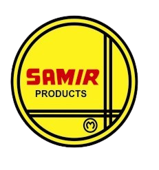

Samir Metal Industries • Samir Metal Agencies
Our website is currently under development. Meanwhile, feel free to explore our catalogue.
Since 1973, Samir Group has been manufacturing premium-grade stainless steel products and supplying to some of India’s leading utensil brands.
Through our registered brand Yellow Bird, and with 100+ retail counters across India (including 30+ in Tamil Nadu), we are known for unmatched product quality, finish, and polish.
Our group includes:
ISO 9001:2015 (QMS) Certified
Email: samirmetalagencies@gmail.com
Phone: +91 93840 50357
Tamil Nadu, India